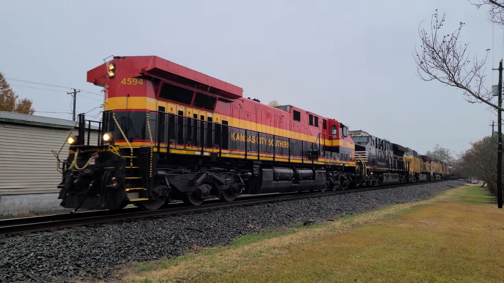
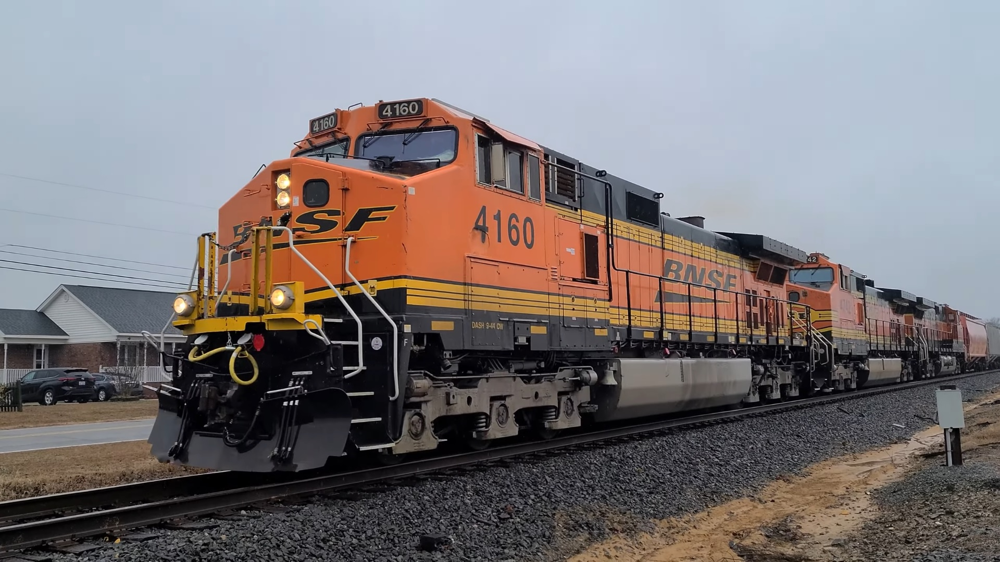

- Date: 9/20/2022
- Location: Garner, NC
- Locomotives: EMD SD40-2
- Notes: An NS engine pulls the railroad's track geometry train

- Date: 11/30/2022
- Location: Garner, NC
- Locomotives: GE AC44CW, GE ET44AC, GE AC44CW, GE AC44CW
- Notes: KCS leads an empty NS ethanol train in the "long hood forward" position

- Date: 1/22/2023
- Location: Pine Level, NC
- Locomotives: GE C44-9W, GE C44-9W, GE C44-9W
- Notes: A BNSF trio pulls an empty phosphate train to be loaded later